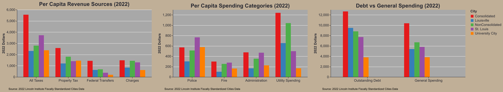
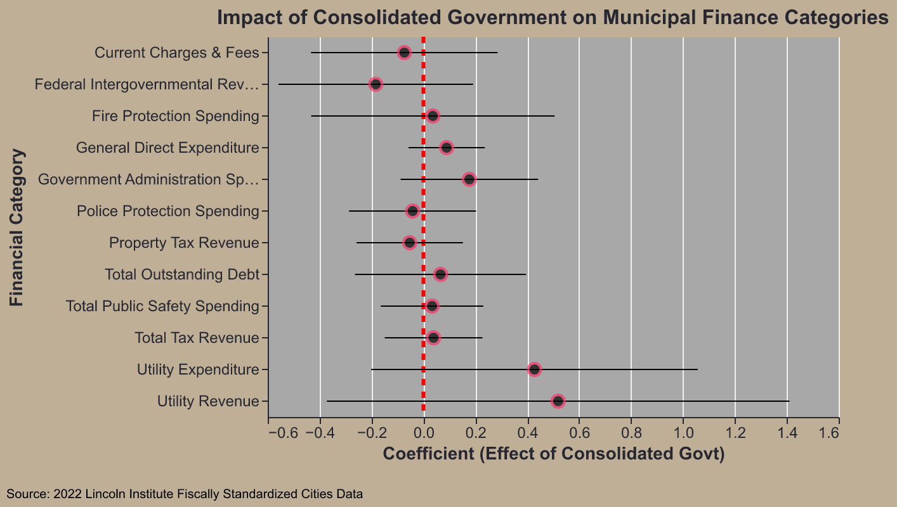

Regional Synergies and Costs: What Would a Reconnected St. Louis City-County Look Like?
Project Write-up
Research Question
Our research asks: will remerging St. Louis City and County better align demographics, reduce municipal costs, and improve infrastructure sharing? Following an 1876 split that permanently locked the city’s boundaries—unlike many rapidly expanding peer cities—there have been renewed efforts to reunite the region, from the Better Together campaign in 2017 to Comptroller support in 2026. Proponents argue this realignment will reduce administrative overhead, improve regional planning, and allow St. Louis to compete more effectively at the national level.
Data
To evaluate how an expanded St. Louis boundary would align with regional characteristics, we analyzed Census data, Fiscally Standardized City (FiSC) data, local municipal reports, and St. Louis Regional Data Exchange records. This allowed us to assess demographics, governance costs, service duplication, and regional assets. However, our analysis faces two major complexities. First is extreme jurisdictional fragmentation. The region comprises 93 municipalities, 60 fire districts, 50+ police departments, and 22+ school districts with heavily overlapping boundaries, making perfect accounting impossible. Second, we had to rely on 2016 local municipal data alongside more recent Census and FiSC data.
Coding
Our preprocessing pipeline transforms raw datasets into clean, analysis-ready CSVs. Detailed source links are available in our README.md. We begin by loading base geographic data and fetching Census Bureau demographics via the Python ‘Census’ package, converting raw numbers into proportional metrics (e.g., educational attainment, racial composition). We merge this demographic data with our geodata, manually tuning specific Census tracts before dissolving boundaries to establish the proposed ‘New St. Louis’ footprint. Next, we clean the local municipal data, applying a winsorization loop to handle outliers and ensure clean visualizations in our Streamlit app. Finally, we process regional infrastructure data and export all finalized dataframes.
Our static plot generation relies on a custom theme developed to ensure visual consistency. First, we load and clean FiSC data, calculating a population-weighted average of consolidated cities for analysis. We compare this against specific peer cities—identified via Better Together St. Louis research—analyzing differences in government revenue and spending using a standardized plotting function. Finally, we prep the data for a simple regression to test correlations between government consolidation and various FiSC financial categories, culminating in a coefficient plot and four stylized visualizations.
We encountered significant technical hurdles, primarily in data acquisition and integration. Initially, extracting aggregated data directly from the Census Bureau’s website proved unwieldy until we transitioned to their Python API, which vastly streamlined our workflow. Furthermore, merging numerous disparate datasets required extensive manual tuning and column mapping. A notable weakness is while we successfully mapped the transit network layout, time constraints prevented us from incorporating actual route usage or high-traffic corridor data. This usage data would be essential for a more robust evaluation of regional transit alignment against the proposed borders.
Streamlit Findings
Our interactive Streamlit application features a three-page dashboard with a sidebar selector, centering on regional maps of census tracts, municipalities, and government districts. Each view contrasts St. Louis’s current boundaries with our proposed boundries. Our analysis reveals that expanding the city based on census tract density improves population alignment, which theoretically broadens the tax base and lowers per-capita service costs. Furthermore, our data shows that municipal governing costs in inner-ring suburbs exceed those of the principal city, bolstering the financial argument for consolidation. Visually, our proposed density-based borders align closely with existing county fire districts and capture major economic assets. These findings suggest that a city-county merger could significantly reduce administrative overhead and better unify the region’s economic assets.
Static Plot Findings
While our Streamlit app showed clear benefits to consolidation, our Fiscally Standardized City (FiSC) data analysis presents a more complex picture. FiSC data better estimates true per-capita burdens by accounting for overlapping taxing authorities, offering a necessary supplement to our municipal-level data. To streamline this analysis, we compare St. Louis to University City (an inner-ring suburb) and Louisville (a consolidated peer city frequently cited by merger proponents).
The charts above reveal that St. Louis has significantly higher overall tax burdens than both Louisville and University City—likely driven by its 1% earnings tax—though property taxes remain comparable to its suburb. Furthermore, contrary to our municipal-level findings, FiSC data shows St. Louis actually exhibits higher administrative and police spending than University City, and both outspend Louisville. Finally, regarding municipal borrowing, while St. Louis carries more debt than University City, it demonstrates better debt discipline than many other peer cities nationally.

Finally, to test the fundamental premise that consolidation inherently drives cost savings, we regressed FiSC financial metrics against government structure. As the coefficient plot above illustrates, there is no statistically significant relationship between consolidated governments and reduced spending across these categories. This addresses our research question and suggest merger proponents may overestimate cost savings when taking a whole of government view.
Conclusion
The availalbe evidence supporting a St. Louis City and County merger is mixed. While consolidation offers clear opportunities to streamline local governance and improve regional coordination the data does not guarantee ultimate cost savings for residents. While regional unification has distinct merits, further research is required. Both citizens and policymakers should be wary of advocates who over-rely on projected financial efficiencies as the primary justification for a merger.